Prime Intellect的使命是造前沿开放模型和持续改进agent的开放超级智能栈。post-training基础设施已经有了，prime-rl、verifier、sandbox、RL环境，但持续学习闭环差最后一步：训好的模型得能服务真实用户、产生新经验，再把生产trace喂回训练。
Prime Inference就是这一步，serverless endpoint加预留容量，多数据中心GPU基础设施上的前沿开源模型弹性服务。它最早是团队自己需要的serving平台：公开前就扛着大规模RL rollout、合成数据生成、评测和长期运行的coding agent，内部每天近一万亿token。从一月起也在生产里服务大客户。下面拆它的架构和GLM-5.3在GB200 NVL72上的调优实录。
Prime的栈是这么转的：prime-rl、verifier、RL环境、sandbox负责训，训好的模型部署到Prime Inference服务真实用户和agent，服务产生新的轨迹、奖励、反馈，从生产流量回流进训练。服务不是终点，是下一轮训练的数据源。
上线卖点列得很实在：跑在NVIDIA Blackwell上，Vera Rubin快来了；跨数据中心自动故障转移；OpenAI兼容，现有工具和SDK换个endpoint加API key就能用；serverless应付波动，预留容量扛持续负载；统一账单和团队级用量统计。底下是NVIDIA Dynamo、vLLM、Mooncake、FlashInfer的组合拳，和Inferact、NVIDIA深度合作，改进都回馈上游。
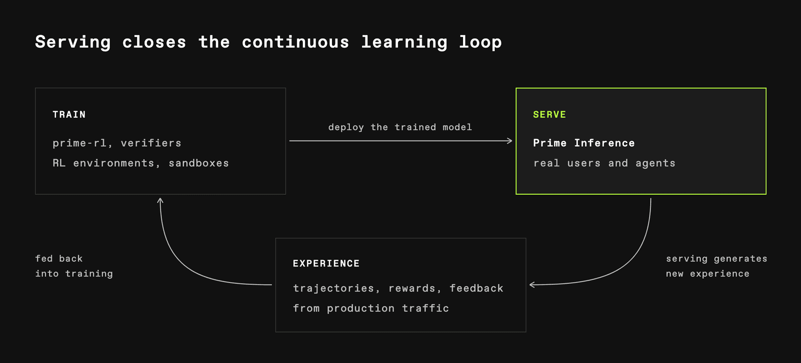
Prime Inference把公共API和模型舰队分开，容量搬家、故障、扩缩都不动客户端endpoint。共享断路器让所有网关副本对故障反应一致，基于租约的准入控制防过载，进程消失后容量自动恢复。
软件层之下，每个集群持续被监控，健康检查一路打到NVLink和InfiniBand，告警进24小时on-call，GPU故障被快速抓住修好而不是慢慢拖垮服务。Prime还留了可观的溢出容量，随时reroute流量、拉起新部署。
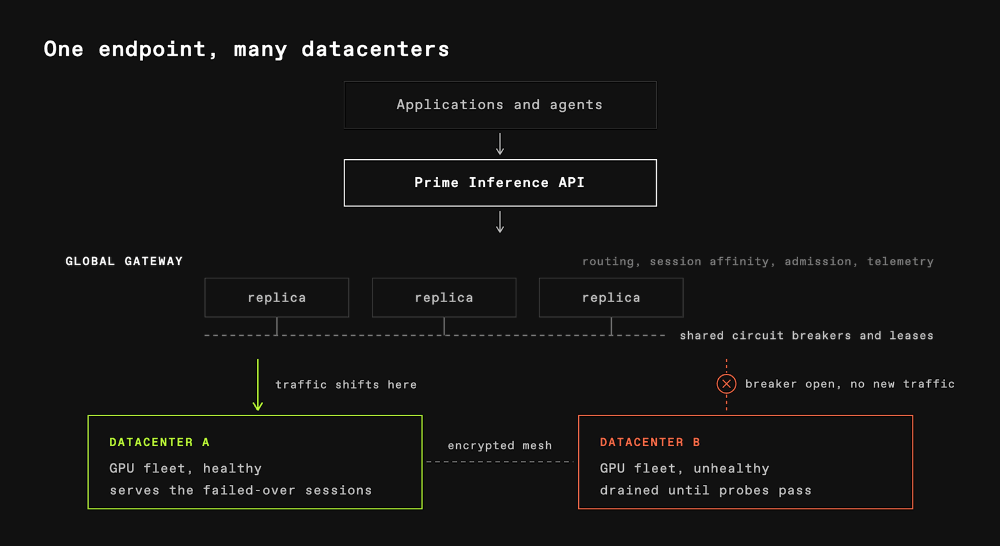
典型agent turn给14万token的prompt加约6K token，大量复用对话历史，负载下这些回头session和全新长prompt请求混跑。团队用SemiAnalysis的AgentX回放多转agent session做基准，自家harness还注入冷启动的长prompt。指标两个：端到端每用户每秒token数看交互，每GPU每秒输出token数看效率。
共享GPU上，长prompt的prefill会打断正在生成的session。chunked prefill能缓解，但两边还是抢GPU时间。做法是prefill和decode拆到不同GPU组：NVIDIA Dynamo管路由编排，vLLM在每组里跑模型，prefill完decoder经NIXL把算好的KV拉过去，请求加入它的batch。实测p90 token间延迟降了近40%。
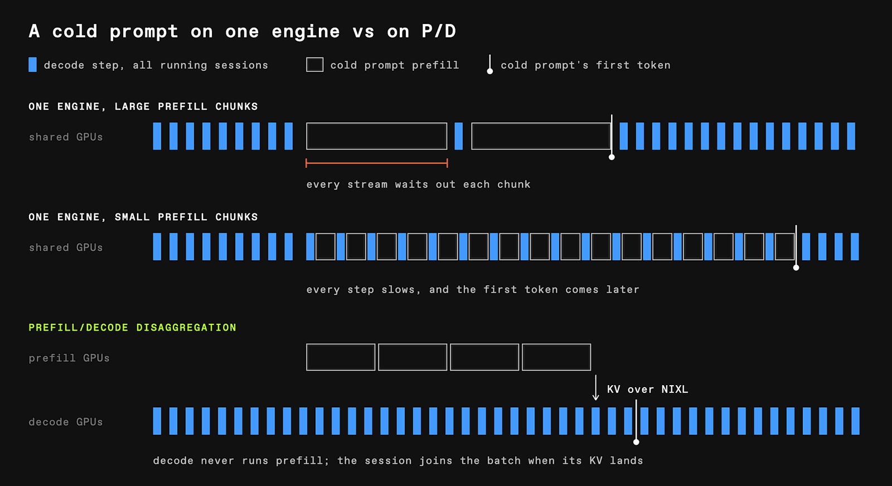
Dynamo的KV感知路由器按两个量选prefill worker：它已缓存了多少prompt前缀，那里排了多少活。worker发布缓存更新，路由器跟踪前缀都在哪。同一个session的turn之间钉在同一个decoder上，KV复用不断。
Mooncake是主机DRAM里的第二级缓存。从显存挤出去的前缀不用重算，从DRAM捞回来，整机架的DRAM池化，块经RDMA回来而不是重算，能留住更多对话历史。路由器在缓存前缀重叠度和排队工作量之间做权衡。
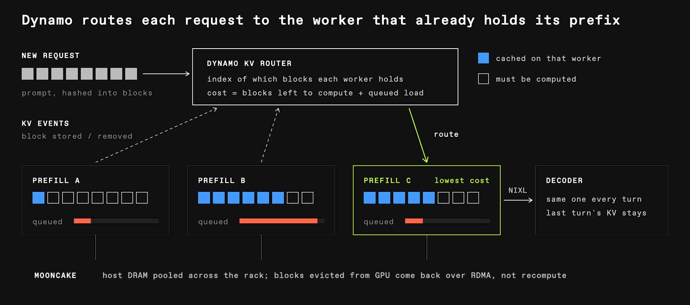
长上下文agent服务的性能，一半是缓存管理问题。交互目标定在每用户每秒100个端到端token，调的是在这个速度下能撑多少并发session。三条路径分开优化：prefill拓扑和调度压首token时间，压缩KV加融合attention kernel撑低延迟decode，传输友好的缓存布局降prefill到decode搬KV的开销。
在100 tok/s每用户这条线上，1:4的P/D配比撑得最多：一个prefill组对四个decoder，66个并发session做到101 tok/s每用户、每GPU 100输出tok/s。横轴是端到端速度，纵轴是每GPU吞吐，右上最好，虚线是Pareto前沿。
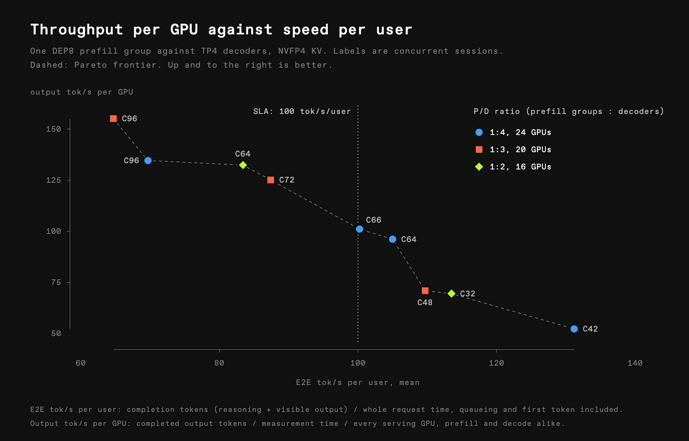
选了DEP8：八个数据并行attention rank，专家并行横跨组内。DEP8把请求分到八个attention worker，模型的专家在组内共享。配上用的MLA缓存布局，TEP8把每份请求的KV在八个rank各复制一份，DEP8让各rank缓存不同的请求。算上多出来的权重内存，同硬件下可用前缀缓存容量大约是TEP8的五倍。
DEP8的代价是DP rank同步：各rank处理不同请求，但每层MoE的all-to-all通信要一起进，闲着的rank也得跑forward跟上队友。profile里一个rank自己的forward 408ms，后面跟约245ms的空转等别人。EP再拉宽，dispatch开销更大：1个DEP16比2个DEP8慢17.9%，combine和finalization涨得最多。
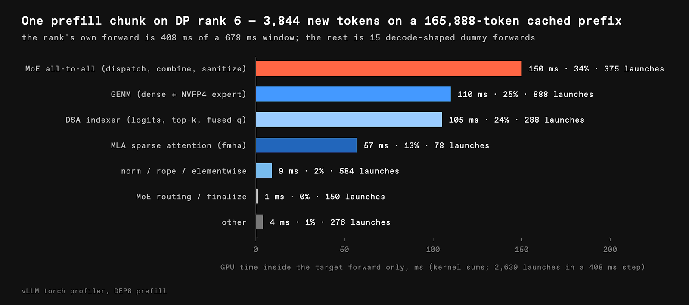
缓存容量消不掉调度延迟。团队发现请求的缓存KV早ready了，请求还在等进running batch：worker在forward间隙查完成的加载，结果过batch队列和调度器，ready的请求可能错过本轮决策再等一步；负载下在跑的请求把下个prefill batch占满，准入被延迟，哪怕缓存历史早ready。这就是调度气泡。
解法是把每步prefill处理的prompt token从每GPU 8K砍到4K。步子短了，等着的请求更早上车。实测排队中位数从550ms掉到110ms，首token时间中位数降约20%。长无缓存prompt的单步开销会涨，但这个workload里多数turn复用已有前缀，划算。
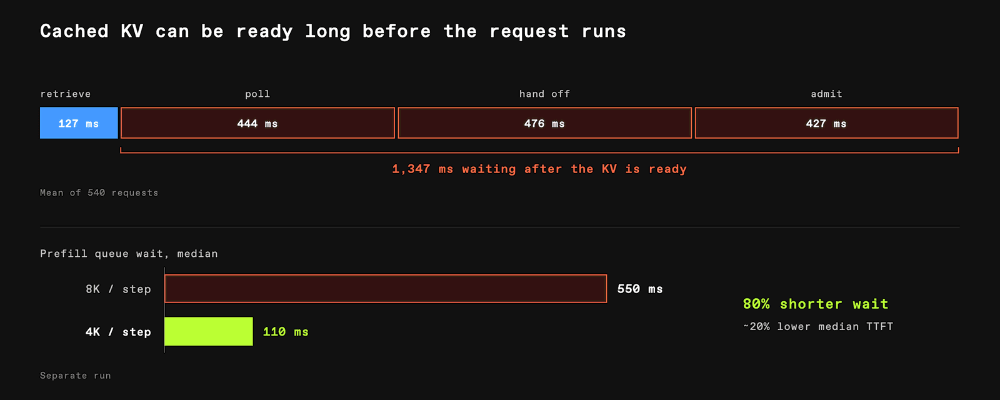
目标负载下TP4的token间延迟最低：AgentX 64 session，均值6.08ms，TP8是6.74ms，DEP8是8.48ms，TP8加DCP4是14.02ms。同GPU预算下可以跑更多decode引擎，每个上面session更少。但TP拓扑有个KV容量tradeoff：权重分到各GPU，可用的MLA布局下每个rank仍存一份完整的latent KV，TP等于存了多份KV拷贝，NIXL从prefill搬到decode的数据也多。TP4比TP8拷贝少，但每GPU分到的权重更多。
DEP把请求分给独立attention rank避开复制，KV容量可用更多，但DP rank在MoE dispatch前的同步推高了decode延迟。也试过decode context并行DCP：缓存序列分rank、模型保持张量并行，KV去重了，但gather query、合并候选、拼partial attention的通信加上来，sparse attention下每个query最多读2048个缓存token，本来就没多少attention活可分，省的计算抵不过加的通信。所以留TP4，想办法把更多KV塞进每GPU内存：压缩。
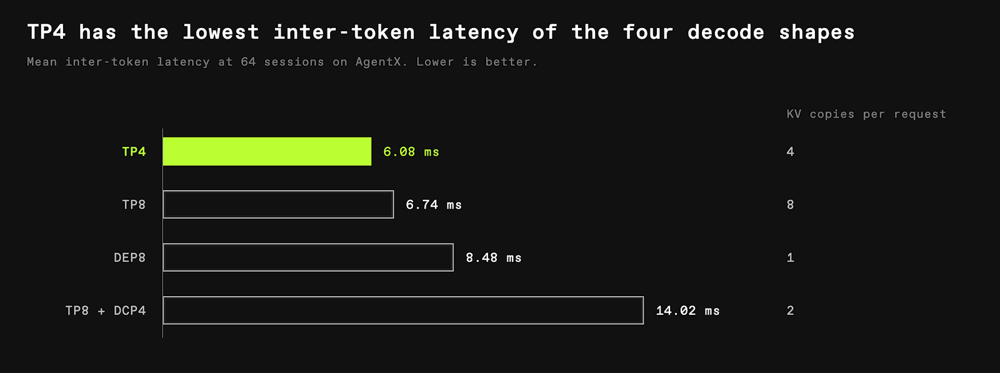
把512维的MLA latent用NVFP4压：每值4bit，每16个值一个FP8 scale，64维的位置分量保持FP8。算上scale，每行MLA缓存从576字节缩到352字节，indexer和其他状态不动，总缓存容量涨约50%，同内存预算下每decoder从109万提到163万缓存token。
第一版实现先把选中的行解包到GPU内存里的临时FP8 buffer，再调现成的attention kernel。容量有了，但每层都付转换加一次显存写读。于是写了原生sparse-MLA kernel：吃sparse indexer选出的位置，直接读压缩行，在片上解包再算attention。NVFP4只是存储格式，attention用FP16算、FP32累加。
每个query token分一支SM协作小队，GB200配置下每队三到八个SM。小队把选中的行分片：每SM里几组warp分别负责解包、算分加softmax、累加输出，三槽buffer让一组解包时另两组算分累加，流水起来。块之间经分布式共享内存合部分结果，不用第二次kernel launch。20个query token每launch时，按batch调小队规模把kernel时间从约32μs压到14.8μs；短context的2048位列表里-1空位原来映射到row 0反复读无用数据，填零后35 token的attention launch从约41μs到20.6μs。
五步优化走完：第一版原生21.5μs，加512线程、query放寄存器、每warp解4行到16.7μs，加cluster经DSMEM合并、padding tile、TMA拷贝到15.1μs，加warp crew三槽ring、解包打分混合重叠到13.8μs，加按launch定cluster大小、空位填零到12.0μs。15 token每launch下，staged NVFP4路径17.7μs，原生12.0μs，NVIDIA的FP8 kernel在真FP8缓存上13.7μs。decode一步里attention只占约8%，更大的实际收益是留住更多KV：NVFP4多约50% KV缓存容量，decode前缀缓存开着时每用户速度相当。
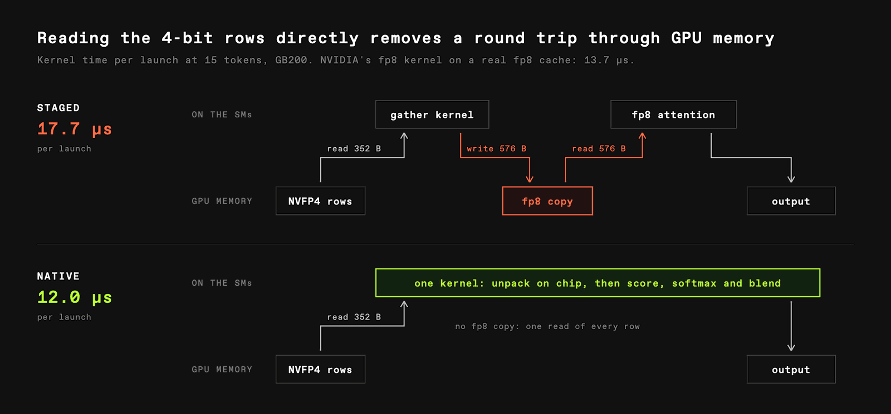
流水线长这样：2048个选中行按512一组分给4个SM，每SM里8个warp解包、4个warp打分、4个warp混合，虚线框标出同一时刻三阶段并行。合结果走彼此的共享内存，输出16 head乘512维，一次写显存。
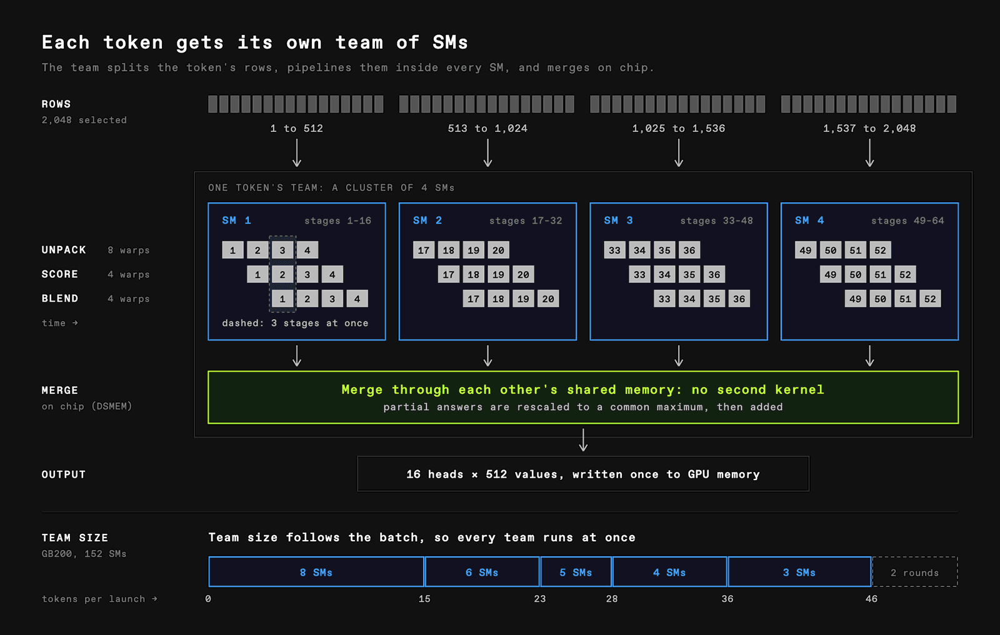
小队规模跟batch走：GB200共152个SM，launch的token少时每token分8个SM，token多时每队缩到3个SM，保证每队一波跑完，token再多就跑两轮。
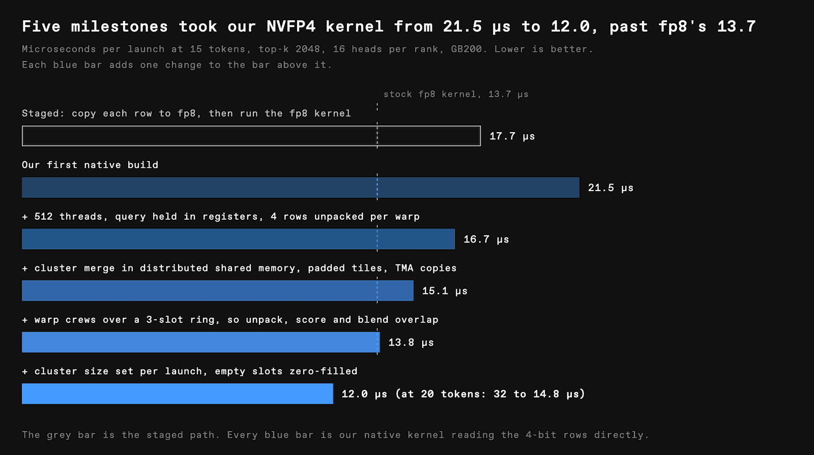
跑了严格的评测集，长上下文任务是重点，确保NVFP4 KV压缩不掉精度。DeepSWE上69.82%对68.47%，涨1.35个点；GSM8K 97.50%对97.42%；MMLU 92.82%对92.73%；HumanEval 99.09%对99.39%，掉0.30个点；HumanEval+ 93.90%对94.82%，掉0.92个点。总体可接受，长上下文没崩。
原生kernel会作为实验性算子贡献给FlashInfer。
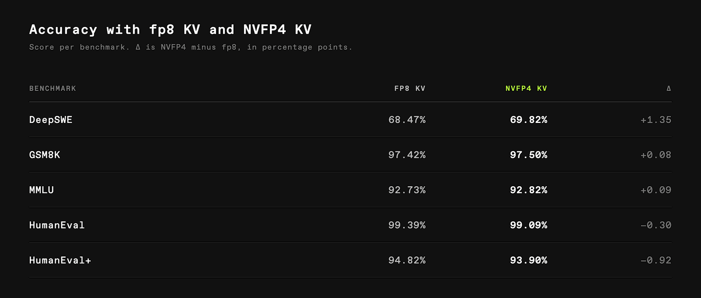
压缩把decode容量做大了，解耦又带来新瓶颈：KV从prefill搬到decode。用vLLM的NIXL connector让decoder经多节点NVLink从prefill worker拉KV。早期对比里NVLink配置比InfiniBand的首token时间多约292ms，更快的互联没换来更快的服务，瓶颈在传输碎片：profile的那条路径上每个传输描述符变成一次小设备到设备拷贝，单个20万token的请求到一个TP4 rank触发3.2万次拷贝，海量小操作的提交和处理先把传输卡死了，NVLink带宽根本吃不满。
原来的层主布局LBHNC按层分开存每层的缓存，搬一个逻辑块要在各层各下一个描述符。块放大到1024 token能减描述符，但数据还是按层碎着，大块还浪费半满块的空间、拉低KV缓存利用率。换成vLLM社区新出的块主布局BLHNC：一个块多层的数据在内存里放一起，NIXL一次搬连续大区，描述符又少又大。TP8对比里，LBHNC用1024 token块，BLHNC用64 token块，块小16倍，描述符从19559降到约1940，少约10倍，平均传输时间从146ms到78ms，降约47%。块可以切更细，开销反而更小。
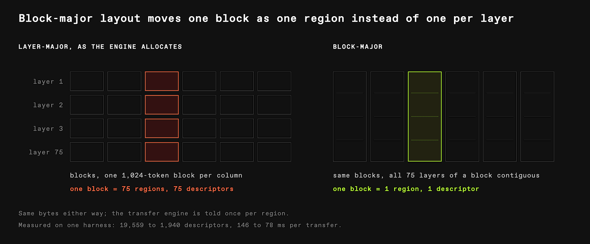
性能只是生产agent服务的一半，agent还要可靠的工具调用来读文件、跑命令、做编辑。模型调错工具或产出不可用的参数，agent就得重试或停下。Dynamo把模型生成的工具调用转成agent收到的API响应，GLM-5.3大规模服务时抓到几类recurrent故障：调了没声明的工具被静默丢掉，回个正常stop，agent无动作可执行、无错误可恢复；参数缺失或类型错，哪怕客户端明确要求按工具格式来，GLM serving路径在生成时没强制执行。
Dynamo本来有机制，但缺GLM格式的结构化标签支持，团队给Dynamo贡献了结构化标签builder，把工具定义翻译成约束模型能生成的名称和参数的规则，vLLM用xgrammar在解码时执行，mask掉违反工具调用语法的token。还修了解析引入的错：字面字符串<被转成<，改了代码或文件内容，有些schema引用和可空参数类型也被错解。最终API响应按这些测：参数类型、必填字段、枚举；schema引用、递归、嵌套；流式和非流式的schema遵从；tool choice的auto、required、none；拒收畸形工具请求。自家工具调用测试集覆盖这些，跟着serving栈更新做回归。和NVIDIA团队深度合作加开源上游贡献后，Dynamo在长期运行的生产agent session里工具调用错误率近零。
栈跑在vLLM推理引擎上，谢Inferact在性能和生产服务上的深度合作，谢全球vLLM贡献者。NVIDIA Dynamo是LLM推理平台之下的操作系统：编排解耦worker、路由请求和KV状态，把分布式GPU舰队变成一个弹性服务系统。
路线图上：batch和异步推理，给大离线任务更低的价格；自有预留容量上的一键专属部署，包括Prime训练跑出的微调模型。上手：uv装prime CLI登录，或把OpenAI SDK指向https://api.pinference.ai/api/v1。团队也在招人：前沿模型打榜加超大RL训练两头吃，是眼下最有意思的系统问题之一，做kernel、解耦服务、KV缓存系统、全局路由的可以去聊聊。
# uv tool install prime && prime login
prime inference chat 'z-ai/glm-5.3' "Write a haiku about KV caches."参考：https://www.primeintellect.ai/blog/prime-inference